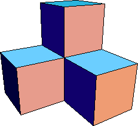
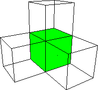

|  |  |
| The first stage consists of four cubes, each of side length |
| Each cube has 6 faces, each of area |
| Interior faces do not contribute to the surface area, and three pairs of cubes share two faces, making them interior. |
| So the area is |
| A1 = 4*6*(1/4) - 6*(1/4) |
| = 6 - (6/4) |